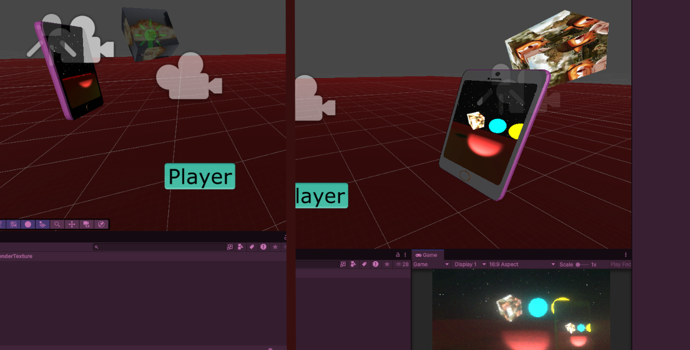
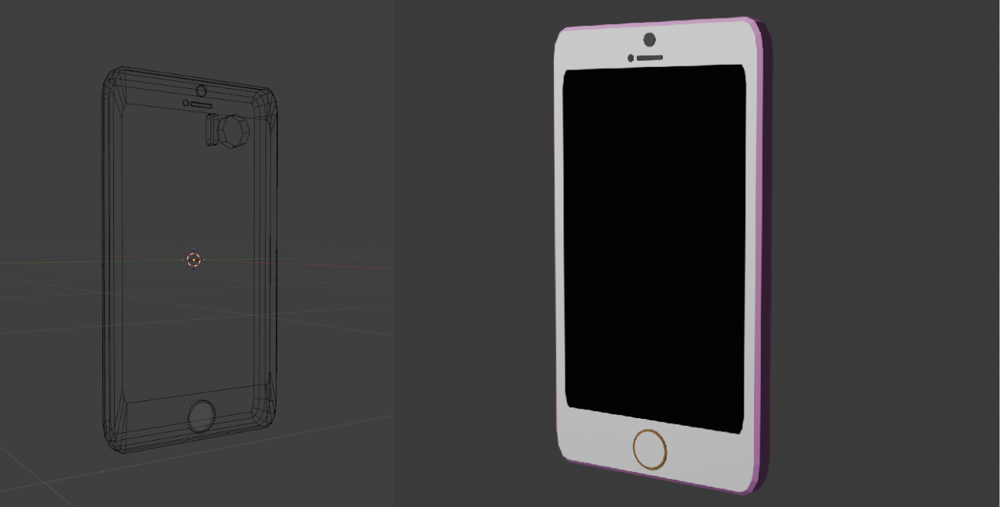
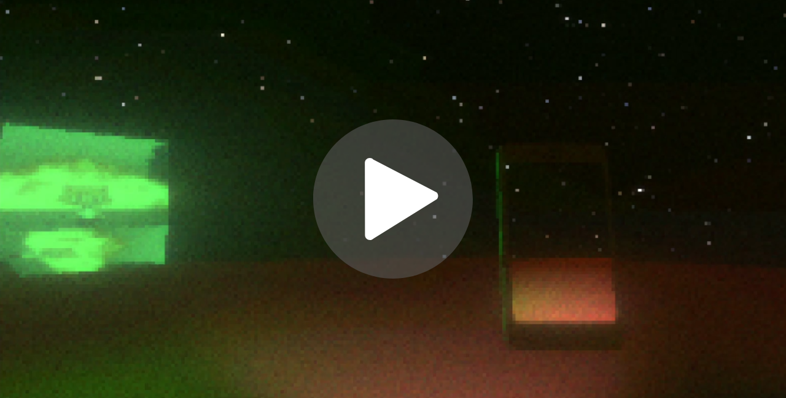
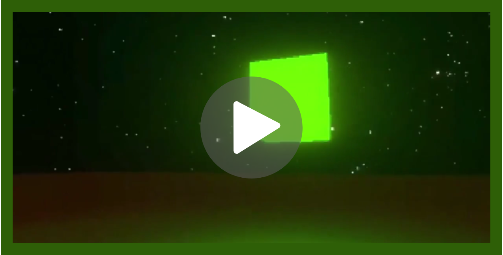
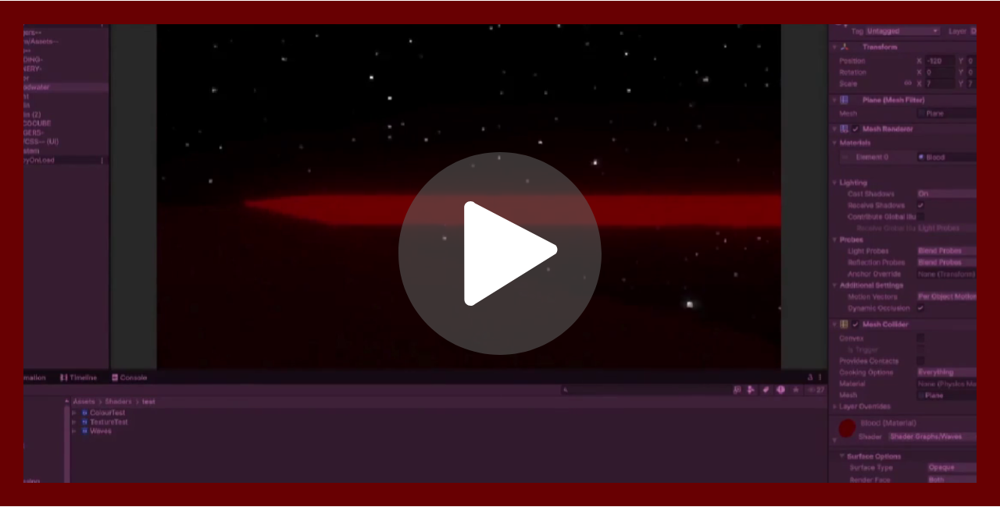
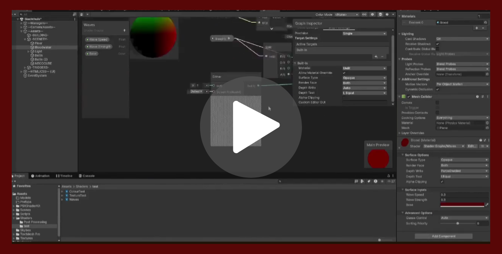

Stukje Vlees was my first introduction to Unity Shader Graph.
I created a wave shader to turn static liquids into animated ones and I learned how to use dithering for transparency to save on performance, as well as how to animate textures.
I also did my first bit of 3D modeling for this project! I created a 3D model of a phone based on my old IPhone that I found lying around in the attic.
I learned how to display a camera component's output directly onto a texture.
I set this up by creating a Render Texture asset in Unity and assigning it as the target display for a virtual camera in the scene.
So, the phone model has its own camera, allowing it to display what it sees on the phone screen texture!
This project was originally meant to be a horror game of some sort, but unfortunately, I eventually ran out of time to finish it.